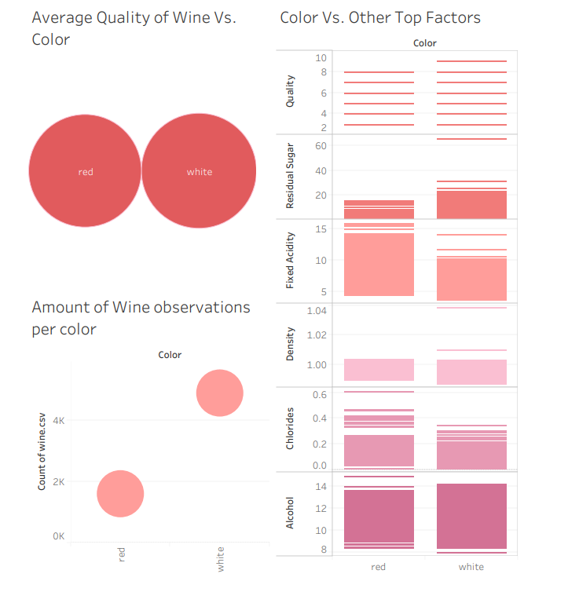

Wine Color

On average, there was 3 times as much data listed for white wine than red wine. White wines tended to have higher levels of residual sugar. Red wines tended to have higher levels of fixed acidity (a low amount brings tartness), and chlorides (saltiness). Both red and white wines had very similar density and alcohol levels as well as quality.